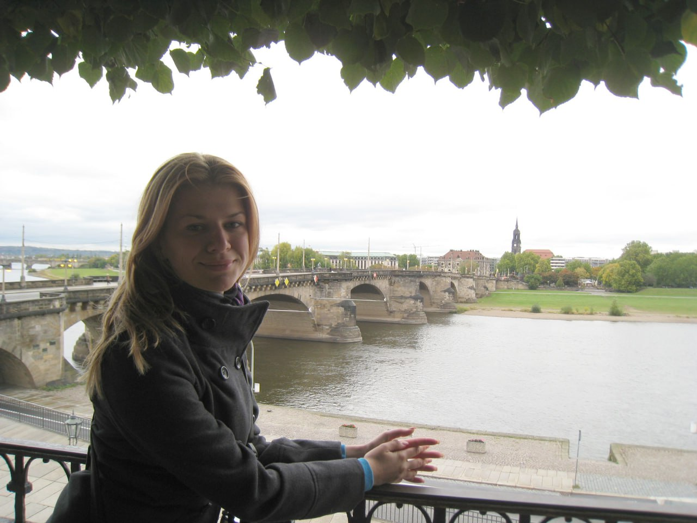
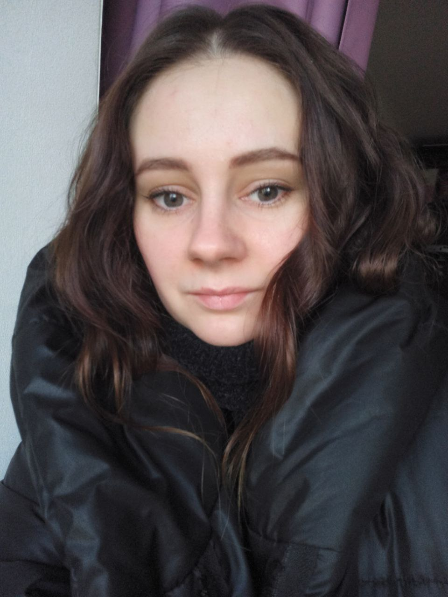
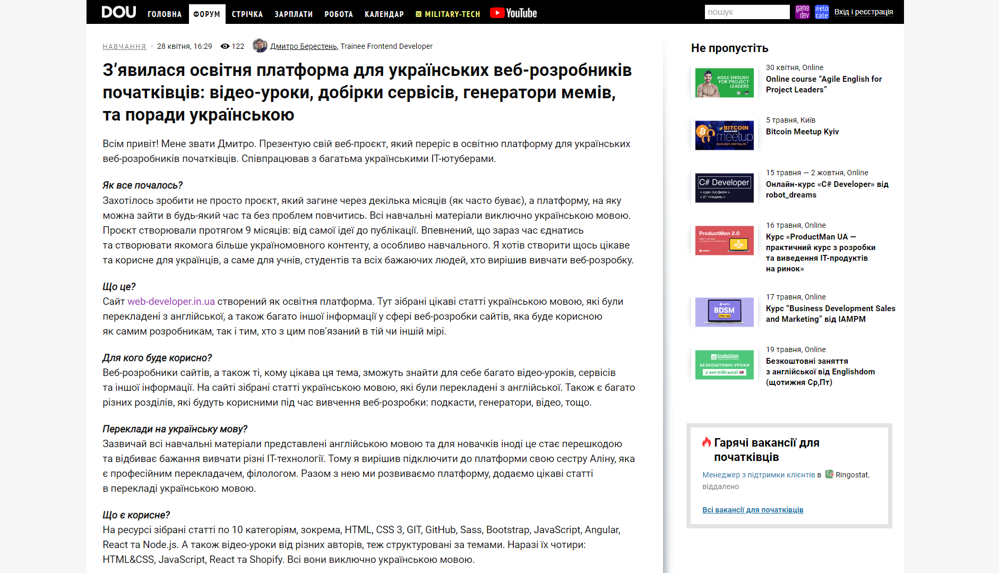
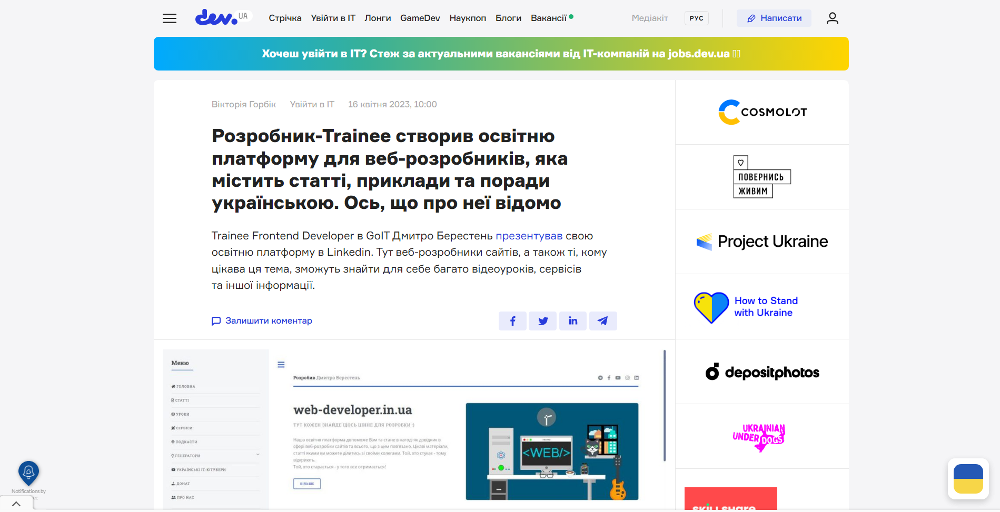
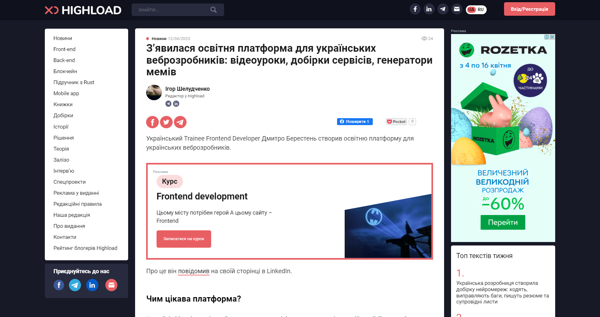

web-developer.in.ua
Про нас
Наша навчальна платформа допоможе Вам та стане в нагоді як довідник в сфері веб-розробки сайтів та всього, що з цим пов'язано. Цікаві матеріали, статті, якими Ви можете поділитися зі своїми колегами. Зібрані цікаві статті українською мовою, які були перекладені з англійської. Також є багато різних розділів, які будуть корисними під час вивчення веб-розробки: подкасти, генератори, відео та багато іншого. Той, хто стукає - тому відкриють. Той, хто старається - у того все вийде! Тут кожен знайде щось цінне для розробки :)
Розробник / адмін

Всім привіт! Мене звати Дмитро Берестень. Вчусь в GOIT на розробника. Я люблю створювати різні сайти. Хотілось створити щось цікаве та корисне для українців, а саме для учнів, студентів та всіх бажаючих людей, хто вирішив вивчати веб-розробку. На цій платформі Ви можете користуватись різними цікавими матеріалами по веб-розробці. Зазвичай всі матеріали йдуть англійською мовою та для новачків іноді це стає перешкодою та відбиває бажання вчитись. Тому я вирішив підключити до платформи свою сестру Аліну, яка є професійним перекладачем, філологом. Разом з нею ми розвиваємо платформу, додаємо цікаві статті, перекладені вже українською мовою. Мій інстаграм: @dmitry_beresten
Редактор / Копірайтер / Філолог

Всім привіт! Мене звати Аліна Берестень. Вирішила долучитись до проєкту свого брата. Допомагаю в оформленні тексту, перекладаю статті українською мовою. Люблю створювати щось незвичне. Створювати український продукт неймовірно приємно. Допомагати іншим людям вивчати розробку не тільки англійською, але й українською мовою для мене є дуже цікавим. Мій інстаграм: @linka_alien_bee
QA engineer
Всім привіт! Мене звати Ірина Зозуля, я тестувальниця веб-сайтів та мобільних додатків. Вперше, коли я побачила веб-сайт Дмитра, я була дуже вражена тим, що з'явилась крута платформа для вивчення мов програмування, html/css, React українською мовою та ще й безкоштовно. Більше того, я була вражена тим, що платформу створив Дмитро Берестень, який позиціонує себе як трейні =) Мені стало дуже цікаво потестувати сайт, перевірити локалізацію та UI/UX, а також подивитись windows breakpoints. Сайт створений професіоналом, який має примний UI, зручний в користуванні UX та цікаве наповнення! Мій Linkedin: https://www.linkedin.com/in/iryna-zozulya
Developer / Copywriter / Translator
Привіт усім! Мене звати Ірина Грицаєнко, і я є починаючою фронтенд розробницею зі знанням англійської мови. Для мене важливо "говорити однією мовою" з колегами і в цьому велику роль відіграє розуміння мови світу технологій. Я долучилася до цього проєкту, оскільки вважаю, що кожен має право вивчати цей світ рідною мовою та вірю в правило "якщо хочеш щось змінити, почни з себе". Я перекладаю англомовні статті на українську мову і, паралельно з цим, досліджую нескінченний світ технологій. Тож нумо вивчати цей світ разом! Мій Linkedin: https://www.linkedin.com/in/iryna-grytsaenko
Developer / Creative Content Maker
Мої вітання! Я - Євгенія Мельниченко, і я світчер, але зовсім скоро стану гарним розробником і буду створювати сайти, майже не використовуючи магію. =) Дякуючи Дмитру Берестеню, я щаслива бути причетною до створення неймовірної української платформи веброзробки. Допомагаю в пошуку цікавого контенту для платформи. А якщо втомився від навчання, тоді обов'язково завітай до розділу "ГЕНЕРАТОРИ", там ти точно зможеш відпочити. Мій LinkedIn: https://www.linkedin.com/in/yevheniia-melnychenko/
Про нас пишуть :
DOU.UA
Cтаття на українському ІТ-порталі dou.ua
dev.ua
Cтаття на українському ІТ-порталі dev.ua
highload.today
Cтаття на українському ІТ-порталі highload.today